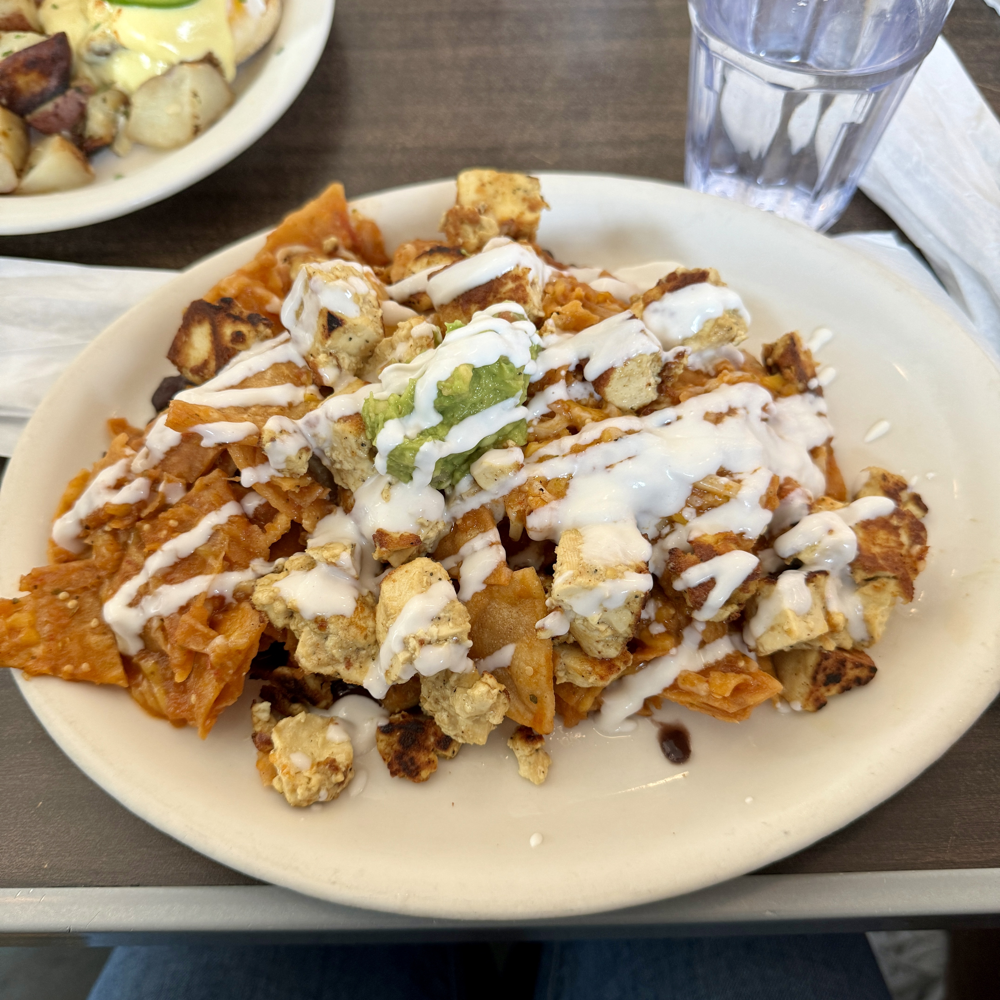

Foods & Drinks

TACOS 1986
Rating: 8/10
PROS
- Consistent flavor and texture
- Good price for value
- Local business
CONS
- Parking: street or paid structures
- Little seating

DAMO
Rating: 7/10
PROS
- Cream top was not overpowering, matcha not too sweet
- Local business
CONS
- Parking: shares lot with too many other businesses
- Decent seating but always busy so hard to find a seat

Millie's cafe
Rating: 8/10
PROS
- First time having this dish vegan, very good!
- Regular and vegan menu
- Local business
- Streets and multiple lots parking
CONS
- Busy, some of our order slipped through
- Had to flag down the waiter multiple times
- Drinks came out after the food